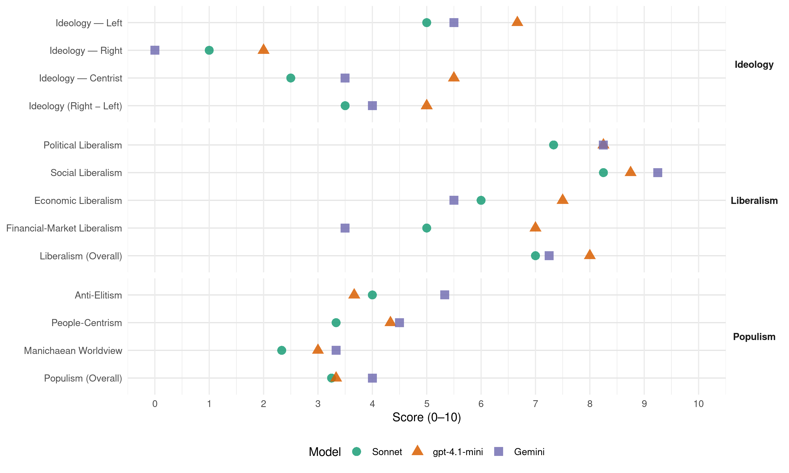

SZ (Czech Republic, 2010)
manifesto_id 82110_201005
Get full text: This site shows derived annotations and short verbatim quotes only. The full manifesto text is © Manifesto Project / WZB — obtain it via manifesto-project.wzb.eu using the manifesto_id above.
Headline scores
| Dimension | Sonnet | gpt-4.1-mini | Gemini |
|---|---|---|---|
| Populism (Overall) | 3.2 | 3.3 | 4.0 |
| Anti-Elitism | 4.0 | 3.7 | 5.3 |
| People-Centrism | 3.3 | 4.3 | 4.5 |
| Manichaean Worldview | 2.3 | 3.0 | 3.3 |
| Ideology (Right − Left) | 3.5 | 5.0 | 4.0 |
| Liberalism (Overall) | 7.0 | 8.0 | 7.2 |
| Political Liberalism | 7.3 | 8.2 | 8.2 |
| Social Liberalism | 8.2 | 8.8 | 9.2 |
| Economic Liberalism | 6.0 | 7.5 | 5.5 |
| Financial-Market Liberalism | 5.0 | 7.0 | 3.5 |
Evidence per dimension
Economic Liberalism
Gemini · score 6.0 · verified · chunk 1
“podmínky pro efektivní fungování trhu”
Úlohou státu není podnikat ani ekonomiku řídit, ale nastartovat podmínky pro efektivní fungování trhu.
Gemini · score 7.0 · verified · chunk 2
“zavedením regulérního soutěžního prostředí”
zlepšení služeb pro cestující zavedením regulérního soutěžního prostředí a objednáváním veřejné dopravy u různých
Gemini · score 6.0 · verified · chunk 3
“vytvoří základní podmínky pro tržní prostředí v této oblasti”
zajistí vyrovnání práv a povinností vlastníků a nájemců bytů a vytvoří základní podmínky pro tržní prostředí v této oblasti.
Gemini · score 3.0 · verified · chunk 4
“nepodporovala tlak na liberalizaci, privatizaci”
vlastní rozhodování a nepodporovala tlak na liberalizaci, privatizaci a deregulaci trhů
gpt-4.1-mini · score 8.0 · verified · chunk 1
“Podporujeme ekologickou daňovou reformu, která snižuje daně z práce a zvyšuje daně ze znečišťování”
Podporujeme ekologickou daňovou reformu, která nemění celkovou výši zdanění, pouze přesouvá daňové zatížení: snižuje daně z práce a zvyšuje daně ze znečišťování životního prostředí.
gpt-4.1-mini · score 7.0 · verified · chunk 2
“zvýšením konkurence ve stavebnictví”
… zamezit plýtvání veřejnými prostředky při výstavbě dopravní infrastruktury: zvýšením konkurence ve stavebnictví, výběrem lepších variant dopravních tras, změnou norem a důslednou kontrolou.
gpt-4.1-mini · score 7.0 · verified · chunk 3
“Budeme prosazovat zachování a rozvoj bytového fondu v majetku obcí”
Budeme prosazovat zachování a rozvoj bytového fondu v majetku obcí, především ve velkých městech, a to zejména pro sociální účely. Nájemní bydlení nesmí bránit pohybu za pracovními příležitostmi a musí být pro občany dostupné kdekoliv v České republice. Sociální nájemní bydlení 4SZ bude navrhovat, aby stát opět finančně podporoval výstavbu obecních nájemních bytů určených jako startovací byty pro mladé rodiny nebo pro krátkodobé bydlení sociálně potřebných rodin.
gpt-4.1-mini · score 8.0 · verified · chunk 4
“Podporujeme rozvoj sociální ekonomiky”
Podporujeme rozvoj sociální ekonomiky, kdy neziskové organizace nejen zlepšují společenské klima, hájí veřejné zájmy a poskytují sociální služby, ale také prostřednictvím sociálního podnikání vytvářejí pracovní místa.
Sonnet · score 6.0 · verified · chunk 1
“Úlohou státu není podnikat ani ekonomiku řídit”
Úlohou státu není podnikat ani ekonomiku řídit, ale nastartovat podmínky pro efektivní fungování trhu.
Sonnet · score 6.0 · verified · chunk 2
“zvýšením konkurence ve stavebnictví”
Chceme zamezit plýtvání veřejnými prostředky při výstavbě dopravní infrastruktury: zvýšením konkurence ve stavebnictví, výběrem lepších variant
Sonnet · score 6.0 · verified · chunk 3
“tržní prostředí v této oblasti”
zajistí vyrovnání práv a povinností vlastníků a nájemců bytů a vytvoří základní podmínky pro tržní prostředí v této oblasti.
Sonnet · score 5.0 · mixed · chunk 4
“nepodporovala tlak na liberalizaci, privatizaci a deregulaci trhů”
zelení budou usilovat, aby Česká republika respektovala právo i těch nejchudších zemí na dostatečný politický prostor pro vlastní rozhodování a nepodporovala tlak na liberalizaci, privatizaci a deregulaci trhů v těchto zemích za každou cenu.
Financial-Market Liberalism
Gemini · score 4.0 · verified · chunk 1
“stát zajistí kontrolu finanční stability penzijních”
Stát přitom zajistí kontrolu finanční stability penzijních fondů, tak aby se pojištěnci nemuseli obávat
Gemini · score 3.0 · verified · chunk 4
“omezí nevýhodné, spekulativní investice”
zabrání daňovým únikům a komerčním machinacím a omezí nevýhodné, spekulativní investice, které nejvíce
gpt-4.1-mini · score 7.0 · verified · chunk 1
“Podpoříme vznik nových pravidel pro finanční sektor, která nebudou zdrojem nestability”
Podpoříme vznik nových pravidel pro finanční sektor, která nebudou zdrojem nestability pro místní ani globální ekonomiku. Jejich součástí bude automatická mezinárodní výměna daňových informací.
gpt-4.1-mini · score 7.0 · verified · chunk 4
“Chceme, aby úřady odpovědné za kontrolu měly dostatečné a vhodně rozdělené pravomoci”
Chceme, aby úřady odpovědné za kontrolu měly dostatečné a vhodně rozdělené pravomoci a mohly je účinně uplatňovat.
Sonnet · score 5.0 · verified · chunk 1
“nová pravidla pro finanční sektor”
Podpoříme vznik nových pravidel pro finanční sektor, která nebudou zdrojem nestability pro místní ani globální ekonomiku.
Sonnet · score 5.0 · verified · chunk 2
“Nepodporujeme privatizaci veřejných zdravotních pojišťoven”
Podmínkou pro fungující konkurenční prostředí ve zdravotnictví je pluralita vlastníků zdravotnických zařízení a zdravotních pojišťoven. Nepodporujeme privatizaci veřejných zdravotních pojišťoven.
Sonnet · score 5.0 · verified · chunk 3
“nesmyslné bankovní poplatky jsou jen jeden”
Nesmyslné bankovní poplatky jsou jen jeden z mnoha příkladů. Stát v ochraně spotřebitele selhává – to je třeba změnit.
Sonnet · score 5.0 · mixed · chunk 4
“České bankovní poplatky jsou o 19% vyšší”
České bankovní poplatky jsou o 19% vyšší než průměrné sazby bank v zemích, kde se platí eurem. Přitom je vybírají stejné finanční ústavy.
Political Liberalism
Gemini · score 8.0 · verified · chunk 1
“oslabit vliv politických stran na Českou televizi”
Navrhli jsme novelu zákona, která pomůže oslabit vliv politických stran na Českou televizi a další veřejnoprávní média.
Gemini · score 8.0 · verified · chunk 2
“porozumění demokratické politice, právu”
globálních souvislostech a také občanská angažovanost či porozumění demokratické politice, právu či ochraně vlastního zdraví
Gemini · score 8.0 · verified · chunk 3
“právo na svobodné shromažďování, které patří k hlavním hodnotám české demokracie”
Podle zelených není třeba omezovat právo na svobodné shromažďování, které patří k hlavním hodnotám české demokracie. Musíme důsledně využít všech prostředků
Gemini · score 9.0 · verified · chunk 4
“Nezávislá média – základ demokracie”
5.4 Skutečně veřejnoprávní a nezávislá média Nezávislá média – základ demokracie Sdělovací prostředky
gpt-4.1-mini · score 8.0 · verified · chunk 1
“Navrhli jsme novelu zákona, která pomůže oslabit vliv politických stran na Českou televizi”
Navrhli jsme novelu zákona, která pomůže oslabit vliv politických stran na Českou televizi a další veřejnoprávní média. Členové mediálních rad budou jmenováni více institucemi než jen Poslaneckou sněmovnou.
gpt-4.1-mini · score 8.0 · verified · chunk 2
“demokracie, právo či ochraně vlastního zdraví”
… občanská angažovanost či porozumění demokratické politice, právu či ochraně vlastního zdraví jsou proto důležitými prvky, které chceme posílit také v českém školství.
gpt-4.1-mini · score 8.0 · verified · chunk 3
“Zelení budou zavádět přístup k internetu jako veřejnou službu”
S otevřenou společností souvisí internet. Zelení budou zavádět přístup k internetu jako veřejnou službu. Pomůžeme zjednodušit proces pro podávání petic pomocí elektronického podpisu. Budeme prosazovat přijetí zákonů o celostátním referendu a krajském referendu. Budeme usilovat o přímou volbu prezidenta již pro nadcházející funkční období.
gpt-4.1-mini · score 9.0 · verified · chunk 4
“Nezávislá média – základ demokracie”
Nezávislá média – základ demokracie Sdělovací prostředky v demokratické společnosti potřebují ke své funkci „hlídacího psa“ svobody slova.
Sonnet · score 7.0 · verified · chunk 1
“omezí přebujelá poslanecká imunita”
Připravili jsme návrh ústavního zákona, kterým se omezí přebujelá poslanecká imunita, která poskytuje českým zákonodárcům až šlechtické výsady.
Sonnet · score 7.0 · verified · chunk 2
“transparentní, celonárodních soutěží”
Podpora státu musí probíhat výhradně prostřednictvím transparentních, celonárodních soutěží. V nich budou vybrány nejlepší projekty
Sonnet · score 8.0 · verified · chunk 3
“svobodné shromažďování, které patří k hlavním hodnotám české demokracie”
Podle zelených není třeba omezovat právo na svobodné shromažďování, které patří k hlavním hodnotám české demokracie.
Liberalism (Overall)
Gemini · score 7.0 · verified · chunk 1
“podmínky pro efektivní fungování trhu”
Úlohou státu není podnikat ani ekonomiku řídit, ale nastartovat podmínky pro efektivní fungování trhu.
Gemini · score 8.0 · verified · chunk 2
“odstranit různé formy diskriminace”
Rovné příležitosti chápeme v širokém slova smyslu. Chceme odstranit různé formy diskriminace tak, aby všechny děti bez ohledu
Gemini · score 8.0 · verified · chunk 3
“právo na svobodné shromažďování, které patří k hlavním hodnotám české demokracie”
Podle zelených není třeba omezovat právo na svobodné shromažďování, které patří k hlavním hodnotám české demokracie. Musíme důsledně využít všech prostředků
Gemini · score 6.0 · verified · chunk 4
“Nezávislá média – základ demokracie”
5.4 Skutečně veřejnoprávní a nezávislá média Nezávislá média – základ demokracie Sdělovací prostředky
gpt-4.1-mini · score 8.0 · verified · chunk 1
“Navrhli jsme novelu zákona, která pomůže oslabit vliv politických stran na Českou televizi”
Navrhli jsme novelu zákona, která pomůže oslabit vliv politických stran na Českou televizi a další veřejnoprávní média. Členové mediálních rad budou jmenováni více institucemi než jen Poslaneckou sněmovnou.
gpt-4.1-mini · score 8.0 · verified · chunk 2
“demokracie, právo či ochraně vlastního zdraví”
… občanská angažovanost či porozumění demokratické politice, právu či ochraně vlastního zdraví jsou proto důležitými prvky, které chceme posílit také v českém školství.
gpt-4.1-mini · score 8.0 · verified · chunk 3
“Zelení budou zavádět přístup k internetu jako veřejnou službu”
S otevřenou společností souvisí internet. Zelení budou zavádět přístup k internetu jako veřejnou službu. Pomůžeme zjednodušit proces pro podávání petic pomocí elektronického podpisu. Budeme prosazovat přijetí zákonů o celostátním referendu a krajském referendu. Budeme usilovat o přímou volbu prezidenta již pro nadcházející funkční období.
gpt-4.1-mini · score 8.0 · verified · chunk 4
“Nezávislá média – základ demokracie”
Nezávislá média – základ demokracie Sdělovací prostředky v demokratické společnosti potřebují ke své funkci „hlídacího psa“ svobody slova.
Sonnet · score 7.0 · verified · chunk 1
“zákon o rovném zacházení (antidiskriminační zákon)”
Po několika letech práce jsme prosadili zákon o rovném zacházení (antidiskriminační zákon).
Sonnet · score 7.0 · verified · chunk 2
“odstranit různé formy diskriminace”
Chceme odstranit různé formy diskriminace tak, aby všechny děti bez ohledu na svůj původ, sociální zázemí či talent měly stejnou šanci
Sonnet · score 7.0 · verified · chunk 3
“svobodné shromažďování, které patří k hlavním hodnotám české demokracie”
Podle zelených není třeba omezovat právo na svobodné shromažďování, které patří k hlavním hodnotám české demokracie.
Anti-Elitism
Gemini · score 6.0 · verified · chunk 1
“pod vlivem lobbistůČEZu a uhelných dolů”
Politické špičky velkých stran však pod vlivem lobbistůČEZu a uhelných dolů blokují řešení.
Gemini · score 6.0 · verified · chunk 3
“papalášské manýry do politiky nepatří”
Fungující občanská společnost a slušná politika patří k základům kvalitního života v každé demokratické zemi. Opravdu to nejde i u nás? Taky si myslíte, že… …papalášské manýry do politiky nepatří? Omezme už konečně poslaneckou imunitu
Gemini · score 4.0 · verified · chunk 4
“politici velkých stran snažili zasahovat”
jsme ale byli svědky toho, kdy se politici velkých stran snažili zasahovat do obsahu zpravodajství
gpt-4.1-mini · score 3.0 · verified · chunk 1
“Tradiční politické strany nejsou schopny dojít k jádru problému”
Tradiční politické strany nejsou schopny dojít k jádru problému současných krizí, kterým je nestabilní a neudržitelný růstový ekonomický model.
gpt-4.1-mini · score 6.0 · verified · chunk 3
“papalášské manýry do politiky nepatří”
Zelení poslanci a poslankyně totiž považují za samozřejmé, že papalášské manýry do politiky nepatří. Strana zelených v parlamentu předložila několik návrhů, které mají změnit poměry: omezit poslaneckou imunitu, jejíž současné nastavení dělá z poslanců a poslankyň občany vyšší kategorie; zakázat tzv. legislativní přílepky, které z našeho právního řádu vytvářejí džungli; změnit pravidla volby mediálních rad, které byly doposud spíše služkou partajních zájmů velkých stran než strážkyněmi nezávislosti médií.
gpt-4.1-mini · score 2.0 · verified · chunk 4
“Nesouhlasíme s volební kampaní z kapes daňových poplatníků”
Nesouhlasíme s volební kampaní z kapes daňových poplatníků. Je nepřijatelné, aby kandidáti sbírali hlasy tím, že nás budou zadlužovat mnohamiliardovými částkami.
Sonnet · score 5.0 · verified · chunk 1
“lobisté ČEZu zásadně ovlivňují rozhodování”
Musí ukončit stav, kdy lobisté ČEZu zásadně ovlivňují rozhodování o státní energetické politice.
Sonnet · score 3.0 · verified · chunk 2
“lobbistických tlaků”
nikoli ji lehkovážně utratit na základě lobbistických tlaků. Chceme, aby nebyla promrhána jedinečná příležitost
Sonnet · score 4.0 · verified · chunk 3
“papalášské manýry do politiky nepatří”
Zelení poslanci a poslankyně totiž považují za samozřejmé, že papalášské manýry do politiky nepatří. Strana zelených v parlamentu předložila několik návrhů
Sonnet · score 4.0 · verified · chunk 4
“politici velkých stran snažili zasahovat do obsahu zpravodajství”
V poslední době jsme ale byli svědky toho, kdy se politici velkých stran snažili zasahovat do obsahu zpravodajství či dosazovat do mediálních rad své pobočníky.
Ideology — Centrist
Gemini · score 4.0 · verified · chunk 3
“Stát v demokratické společnosti nemá být pánem, ale služebníkem”
Veřejná správa – ne korupci, ano službě občanům Stát v demokratické společnosti nemá být pánem, ale služebníkem svých občanů, kterým skládá účty
Gemini · score 3.0 · verified · chunk 4
“politici velkých stran snažili zasahovat”
jsme ale byli svědky toho, kdy se politici velkých stran snažili zasahovat do obsahu zpravodajství
gpt-4.1-mini · score 6.0 · verified · chunk 1
“Lidé přestávají politice rozumět, ztrácejí důvěru a nakonec i zájem”
Lidé přestávají politice rozumět, ztrácejí důvěru a nakonec i zájem. Pokračováním v zajetých kolejích se jen snažíme vzkřísit mrtvolu.
gpt-4.1-mini · score 5.0 · verified · chunk 3
“Fungující občanská společnost a slušná politika patří k základům kvalitního života”
Fungující občanská společnost a slušná politika patří k základům kvalitního života v každé demokratické zemi. Opravdu to nejde i u nás? Taky si myslíte, že… …papalášské manýry do politiky nepatří? Omezme už konečně poslaneckou imunitu a štědrý systém náhrad.
Sonnet · score 3.0 · verified · chunk 1
“Tradiční politické strany nejsou schopny dojít k jádru”
Tradiční politické strany nejsou schopny dojít k jádru problému současných krizí
Sonnet · score 2.0 · verified · chunk 2
“kvalitnímu životu je svobodná a soudržná společnost”
Klíčem ke kvalitnímu životu je svobodná a soudržná společnost, která nabízí rovné příležitosti
Sonnet · score 3.0 · verified · chunk 3
“Stát nemá být pánem, ale služebníkem”
Stát v demokratické společnosti nemá být pánem, ale služebníkem svých občanů, kterým skládá účty
Sonnet · score 2.0 · verified · chunk 4
“Rada nesmí být služkou velkých parlamentních stran”
Rada nesmí být služkou velkých parlamentních stran, musí být zárukou důvěryhodnosti při ochraně veřejného zájmu
Ideology — Left
Gemini · score 6.0 · verified · chunk 1
“spravedlivé posílení prvků daňové progrese”
Zelení podporují spravedlivé posílení prvků daňové progrese
Gemini · score 5.0 · verified · chunk 3
“pro krátkodobé bydlení sociálně potřebných rodin”
aby stát opět finančně podporoval výstavbu obecních nájemních bytů určených jako startovací byty pro mladé rodiny nebo pro krátkodobé bydlení sociálně potřebných rodin.
gpt-4.1-mini · score 7.0 · verified · chunk 1
“Podporujeme spravedlivý důchodový systém založený na solidaritě”
Strana zelených bude podporovat spravedlivý důchodový systém založený jak na principech generační i příjmové solidarity, tak na principu individuální zodpovědnosti občana za zajištění prostředků na své stáří.
gpt-4.1-mini · score 6.0 · verified · chunk 3
“Postavme se rázně proti všem projevům rasismu a xenofobie”
…by se Česká republika měla víc zajímat o dodržování lidských práv doma i ve světě? Rasistům v České republice nebezpečně narostl hřebínek. Postavme se rázně proti všem projevům rasismu a xenofobie. Neonacistické strany a hnutí by měly být rozpuštěny. Lidská práva jsou univerzální, ale musíme je aktivně chránit.
gpt-4.1-mini · score 7.0 · verified · chunk 4
“Usilujeme o zmírňování extrémních sociálních rozdílů”
Usilujeme o zmírňování extrémních sociálních rozdílů, které už teď jsou zdrojem velkého napětí ve společnosti a také nárůstu politického extremismu.
Sonnet · score 5.0 · verified · chunk 1
“funkční a spravedlivý daňový systém založený na progresi”
Výchozími body jsou pro nás funkční a spravedlivý daňový systém založený na progresi, dostupné veřejné služby
Sonnet · score 5.0 · verified · chunk 2
“rovné příležitosti a možnost volby pro všechny”
Klíčem ke kvalitnímu životu je svobodná a soudržná společnost, která nabízí rovné příležitosti a možnost volby pro všechny.
Sonnet · score 5.0 · verified · chunk 3
“podporovat výstavbu obecních nájemních bytů”
aby stát opět finančně podporoval výstavbu obecních nájemních bytů určených jako startovací byty pro mladé rodiny
Sonnet · score 5.0 · verified · chunk 4
“usilujeme o zmírňování extrémních sociálních rozdílů”
Usilujeme o zmírňování extrémních sociálních rozdílů, které už teď jsou zdrojem velkého napětí ve společnosti a také nárůstu politického extremismu.
Ideology (Right − Left)
Gemini · score 5.0 · verified · chunk 1
“spravedlivé posílení prvků daňové progrese”
Zelení podporují spravedlivé posílení prvků daňové progrese
Gemini · score 4.0 · verified · chunk 3
“Stát v demokratické společnosti nemá být pánem, ale služebníkem”
Veřejná správa – ne korupci, ano službě občanům Stát v demokratické společnosti nemá být pánem, ale služebníkem svých občanů, kterým skládá účty
Gemini · score 3.0 · verified · chunk 4
“politici velkých stran snažili zasahovat”
jsme ale byli svědky toho, kdy se politici velkých stran snažili zasahovat do obsahu zpravodajství
gpt-4.1-mini · score 5.0 · verified · chunk 1
“Tradiční politické strany nejsou schopny dojít k jádru problému”
Tradiční politické strany nejsou schopny dojít k jádru problému současných krizí, kterým je nestabilní a neudržitelný růstový ekonomický model.
gpt-4.1-mini · score 5.0 · verified · chunk 3
“papalášské manýry do politiky nepatří”
Zelení poslanci a poslankyně totiž považují za samozřejmé, že papalášské manýry do politiky nepatří. Strana zelených v parlamentu předložila několik návrhů, které mají změnit poměry: omezit poslaneckou imunitu, jejíž současné nastavení dělá z poslanců a poslankyň občany vyšší kategorie; zakázat tzv. legislativní přílepky, které z našeho právního řádu vytvářejí džungli; změnit pravidla volby mediálních rad, které byly doposud spíše služkou partajních zájmů velkých stran než strážkyněmi nezávislosti médií.
gpt-4.1-mini · score 5.0 · verified · chunk 4
“Usilujeme o zmírňování extrémních sociálních rozdílů”
Usilujeme o zmírňování extrémních sociálních rozdílů, které už teď jsou zdrojem velkého napětí ve společnosti a také nárůstu politického extremismu.
Sonnet · score 4.0 · verified · chunk 1
“funkční a spravedlivý daňový systém založený na progresi”
Výchozími body jsou pro nás funkční a spravedlivý daňový systém založený na progresi, dostupné veřejné služby
Sonnet · score 4.0 · verified · chunk 2
“rovné příležitosti a možnost volby pro všechny”
svobodná a soudržná společnost, která nabízí rovné příležitosti a možnost volby pro všechny
Sonnet · score 3.0 · verified · chunk 3
“papalášské manýry do politiky nepatří”
Zelení poslanci a poslankyně totiž považují za samozřejmé, že papalášské manýry do politiky nepatří.
Sonnet · score 3.0 · verified · chunk 4
“usilujeme o zmírňování extrémních sociálních rozdílů”
Usilujeme o zmírňování extrémních sociálních rozdílů, které už teď jsou zdrojem velkého napětí ve společnosti a také nárůstu politického extremismu.
Ideology — Right
Gemini · score 0.0 · verified · chunk 3
“Postavme se rázně proti všem projevům rasismu a xenofobie”
Česká republika měla víc zajímat o dodržování lidských práv doma i ve světě? Rasistům v České republice nebezpečně narostl hřebínek. Postavme se rázně proti všem projevům rasismu a xenofobie.
gpt-4.1-mini · score 2.0 · verified · chunk 1
“Odmítáme „řešit“ ekonomickou krizi zaváděním protekcionistických opatření”
Odmítáme „řešit“ ekonomickou krizi zaváděním protekcionistických opatření uzavírajících jednotlivé trhy do sebe. Zároveň však zdůrazňujeme nezbytnost stejných a tudíž férových podmínek pro všechny aktéry.
gpt-4.1-mini · score 3.0 · verified · chunk 3
“Neonacistické strany a hnutí by měly být rozpuštěny”
Rasistům v České republice nebezpečně narostl hřebínek. Postavme se rázně proti všem projevům rasismu a xenofobie. Neonacistické strany a hnutí by měly být rozpuštěny. Lidská práva jsou univerzální, ale musíme je aktivně chránit.
gpt-4.1-mini · score 1.0 · verified · chunk 4
“Strana zelených odmítá jakékoliv projevy xenofobie a homofobie”
Strana zelených odmítá jakékoliv projevy xenofobie a homofobie. Chceme pomoci k vytváření tolerantního prostředí ve společnosti.
Sonnet · score 1.0 · verified · chunk 1
“pošlapáváním základních lidských práv”
nemůžeme naše krátkodobé ekonomické zájmy směňovat za zavírání očí nad pošlapáváním základních lidských práv
Sonnet · score 1.0 · verified · chunk 2
“závislost na plynu z Ruska”
Navíc snížíme exhalace a závislost na plynu z Ruska. Pěstování energetických plodin také chrání pole před erozí.
Sonnet · score 1.0 · verified · chunk 3
“naší krajiny a krajinný ráz”
Na mnoha místech naší země byly vážně narušeny estetické hodnoty krajiny a krajinný ráz. Chceme zdravou a harmonicky se vyvíjející krajinu
Sonnet · score 1.0 · verified · chunk 4
“Česko jako domov i pro ty, co se zde nenarodili”
Česko jako domov i pro ty, co se zde nenarodili. Podpoříme významnější roli neziskových organizací a sociálních pracovníků v integraci přistěhovalců
Manichaean Worldview
Gemini · score 4.0 · verified · chunk 1
“pokračovat ve staré hře na růst”
ostatní politické strany shodnou, je nutnost pokračovat ve staré hře na růst staré ekonomiky
Gemini · score 3.0 · verified · chunk 3
“služkou partajních zájmů velkých stran”
změnit pravidla volby mediálních rad, které byly doposud spíše služkou partajních zájmů velkých stran než strážkyněmi nezávislosti médií.
Gemini · score 3.0 · verified · chunk 4
“fenomén „justiční mafie“, která propojila”
se objevil mimořádně zhoubný fenomén „justiční mafie“, která propojila nejvyšší funkcionáře státního
gpt-4.1-mini · score 2.0 · verified · chunk 1
“Není naší chybou, že svět je takový, jaký je. Je ale jen naše chyba, pokud takový zůstává.”
Není naší chybou, že svět je takový, jaký je. Je ale jen naše chyba, pokud takový zůstává. Musíme se poučit z řady současných krizí a učinit místo nám na čas svěřené lepším místem pro život.
gpt-4.1-mini · score 4.0 · verified · chunk 3
“Rasistům v České republice nebezpečně narostl hřebínek”
…by se Česká republika měla víc zajímat o dodržování lidských práv doma i ve světě? Rasistům v České republice nebezpečně narostl hřebínek. Postavme se rázně proti všem projevům rasismu a xenofobie. Neonacistické strany a hnutí by měly být rozpuštěny.
Sonnet · score 3.0 · verified · chunk 1
“velké politické strany vědomě zvětšují náš společný dluh”
Je třeba skoncovat také s tím, jak velké politické strany pro svůj volební úspěch vědomě zvětšují náš společný dluh.
Sonnet · score 2.0 · verified · chunk 2
“oboustranně výhodného obchodování se zdravím pacientů”
usvědčuje některé zástupce farmaceutických firem a některé lékaře z oboustranně výhodného obchodování se zdravím pacientů
Sonnet · score 2.0 · verified · chunk 3
“Justice má sloužit veřejnému zájmu, ne mafii”
5.5 Justice má sloužit veřejnému zájmu, ne mafii Strana zelených chce dokončit započatou reformu justice
People-Centrism
Gemini · score 5.0 · verified · chunk 1
“každodenním životě všech obyvatel České republiky”
které se jako známka zvýšené kvality objeví v každodenním životě všech obyvatel České republiky.
Gemini · score 4.0 · verified · chunk 3
“jako místo ke kvalitnímu životu deseti milionů obyvatel”
Chceme chránit i vytvářet pestrou, pěknou kulturní krajinu jako místo ke kvalitnímu životu deseti milionů obyvatel České republiky. Její podoba je zrcadlem
gpt-4.1-mini · score 5.0 · verified · chunk 1
“Lidé přestávají politice rozumět, ztrácejí důvěru”
Lidé přestávají politice rozumět, ztrácejí důvěru a nakonec i zájem. Pokračováním v zajetých kolejích se jen snažíme vzkřísit mrtvolu.
gpt-4.1-mini · score 5.0 · verified · chunk 3
“Fungující občanská společnost a slušná politika patří k základům kvalitního života”
Fungující občanská společnost a slušná politika patří k základům kvalitního života v každé demokratické zemi. Opravdu to nejde i u nás? Taky si myslíte, že… …papalášské manýry do politiky nepatří? Omezme už konečně poslaneckou imunitu a štědrý systém náhrad.
gpt-4.1-mini · score 3.0 · verified · chunk 4
“věříme, že je možné a nutné vést dialog mezi občanskou společností a politickou stranou”
Věříme, že je možné a nutné vést dialog mezi občanskou společností a politickou stranou, aniž by se tím narušovala jejich autonomie.
Sonnet · score 4.0 · verified · chunk 2
“svobodná a soudržná společnost, která nabízí rovné příležitosti”
Klíčem ke kvalitnímu životu je svobodná a soudržná společnost, která nabízí rovné příležitosti a možnost volby pro všechny.
Sonnet · score 3.0 · verified · chunk 3
“Stát nemá být pánem, ale služebníkem svých občanů”
Stát v demokratické společnosti nemá být pánem, ale služebníkem svých občanů, kterým skládá účty ze své práce
Sonnet · score 3.0 · verified · chunk 4
“veřejnost či novináři protestují už při pouhém podezření”
A je dobře, že veřejnost či novináři protestují už při pouhém podezření, že by někdo chtěl zneužít státní moc nebo ekonomický tlak.
Populism (Overall)
Gemini · score 5.0 · verified · chunk 1
“pod vlivem lobbistůČEZu a uhelných dolů”
Politické špičky velkých stran však pod vlivem lobbistůČEZu a uhelných dolů blokují řešení.
Gemini · score 4.0 · verified · chunk 3
“papalášské manýry do politiky nepatří”
Fungující občanská společnost a slušná politika patří k základům kvalitního života v každé demokratické zemi. Opravdu to nejde i u nás? Taky si myslíte, že… …papalášské manýry do politiky nepatří? Omezme už konečně poslaneckou imunitu
Gemini · score 3.0 · verified · chunk 4
“fenomén „justiční mafie“, která propojila”
se objevil mimořádně zhoubný fenomén „justiční mafie“, která propojila nejvyšší funkcionáře státního
gpt-4.1-mini · score 3.0 · verified · chunk 1
“Tradiční politické strany nejsou schopny dojít k jádru problému”
Tradiční politické strany nejsou schopny dojít k jádru problému současných krizí, kterým je nestabilní a neudržitelný růstový ekonomický model.
gpt-4.1-mini · score 5.0 · verified · chunk 3
“papalášské manýry do politiky nepatří”
Zelení poslanci a poslankyně totiž považují za samozřejmé, že papalášské manýry do politiky nepatří. Strana zelených v parlamentu předložila několik návrhů, které mají změnit poměry: omezit poslaneckou imunitu, jejíž současné nastavení dělá z poslanců a poslankyň občany vyšší kategorie; zakázat tzv. legislativní přílepky, které z našeho právního řádu vytvářejí džungli; změnit pravidla volby mediálních rad, které byly doposud spíše služkou partajních zájmů velkých stran než strážkyněmi nezávislosti médií.
gpt-4.1-mini · score 2.0 · verified · chunk 4
“Nesouhlasíme s volební kampaní z kapes daňových poplatníků”
Nesouhlasíme s volební kampaní z kapes daňových poplatníků. Je nepřijatelné, aby kandidáti sbírali hlasy tím, že nás budou zadlužovat mnohamiliardovými částkami.
Sonnet · score 4.0 · verified · chunk 1
“lobisté ČEZu zásadně ovlivňují rozhodování”
Musí ukončit stav, kdy lobisté ČEZu zásadně ovlivňují rozhodování o státní energetické politice.
Sonnet · score 3.0 · verified · chunk 2
“lobbistických tlaků”
nikoli ji lehkovážně utratit na základě lobbistických tlaků
Sonnet · score 3.0 · verified · chunk 3
“papalášské manýry do politiky nepatří”
Zelení poslanci a poslankyně totiž považují za samozřejmé, že papalášské manýry do politiky nepatří.
Sonnet · score 3.0 · verified · chunk 4
“Nelíbí se nám populistické plány politických stran”
Nelíbí se nám populistické plány politických stran, jež před volbami vymýšlejí další a další sociální podpory, na které přitom ve státní pokladně nejsou peníze.
Social Liberalism